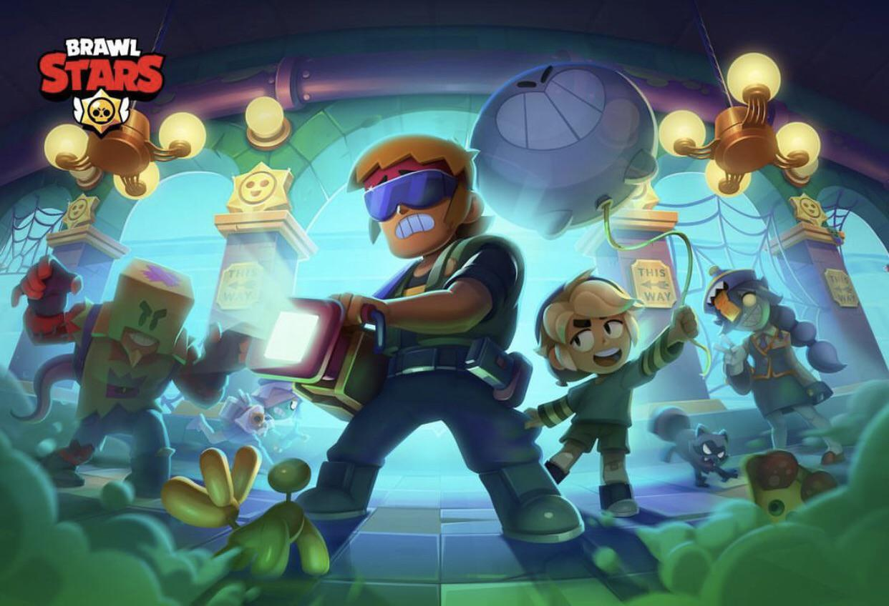
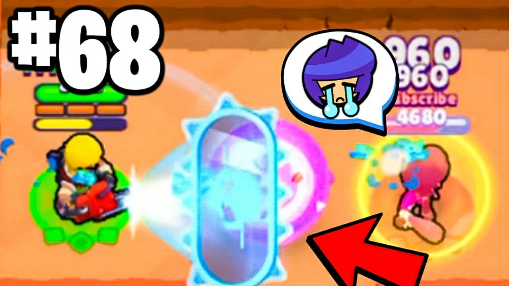

8-Bit
Acerca

Este es un tanque que está siendo meta principalmente por su pasiva que puede complentarmucho a las composiciones que carecen de HP (principalmente son las de mayor DPS).
| Stat | Descripción |
|---|---|
| Vida | 10.400 |
| Velocidad de movimiento | Rápido |
| Daño | 2.880 |
| Rango de ataque | Normal |
| Velocidad de recarga | Normal |
La pasiva de este personaje crea un muro que no solo protegerá, sino que hará counter a todos los ataques que el escudo reciba, su pasiva se puede recargar pegandole al enemigo, como quedandote a lado de tus aliados.
| Daño | 1.600 |
| Rango | Corto |

Sus power stars y gadgets son unicos para este perosnaje:
| Power Star | Descripción | Gadget | Descripción |
|---|---|---|---|
| Blockbuster | Buster hace 15% más de daño por cada aliado que esté dentro de su carga de pasiva. | Utility belt | Si tus aliados están cerca tuyo, podrás curarlo hasta 750 HP al instante. |
| Kevlar vest | Con su pasiva activa, Buster recibe 10% menos de daño, y es inmune a los knocbacks, stuns, y realentizaciones. | Slo-mo replay | Estunea por 2 segundos y atrae a los enemigos con tu siguiente básico. |
Abajo se ve una demostración del barwler en acción.